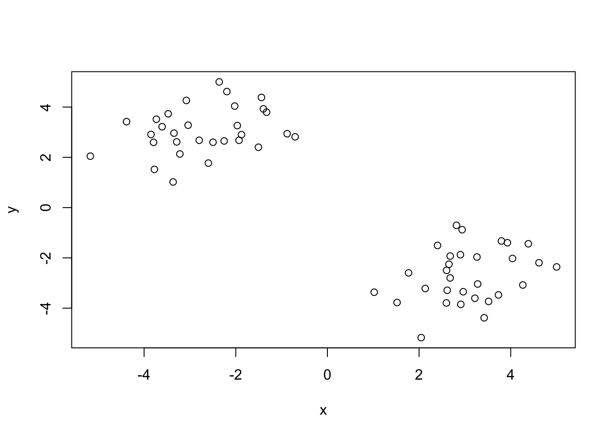
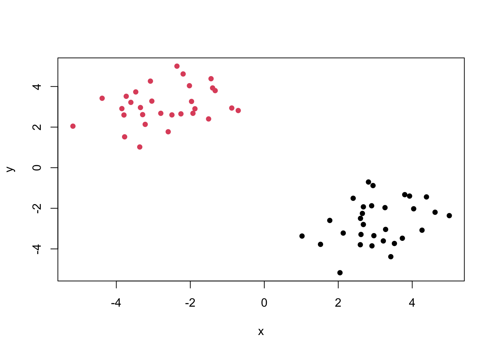
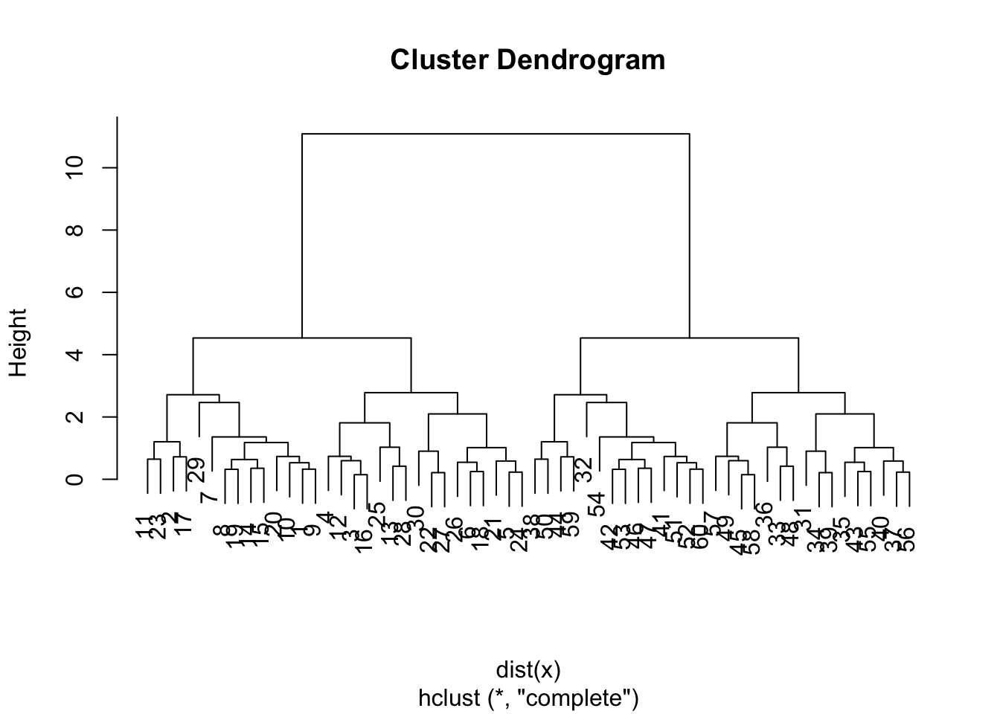
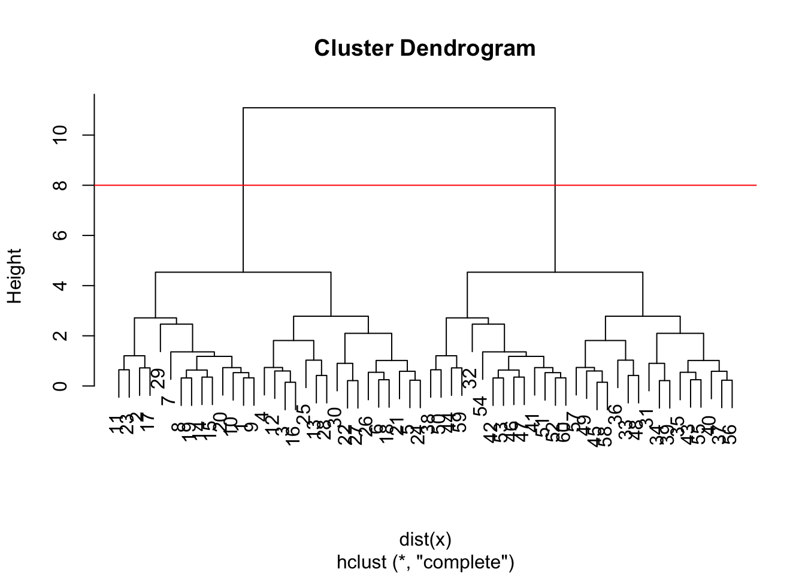
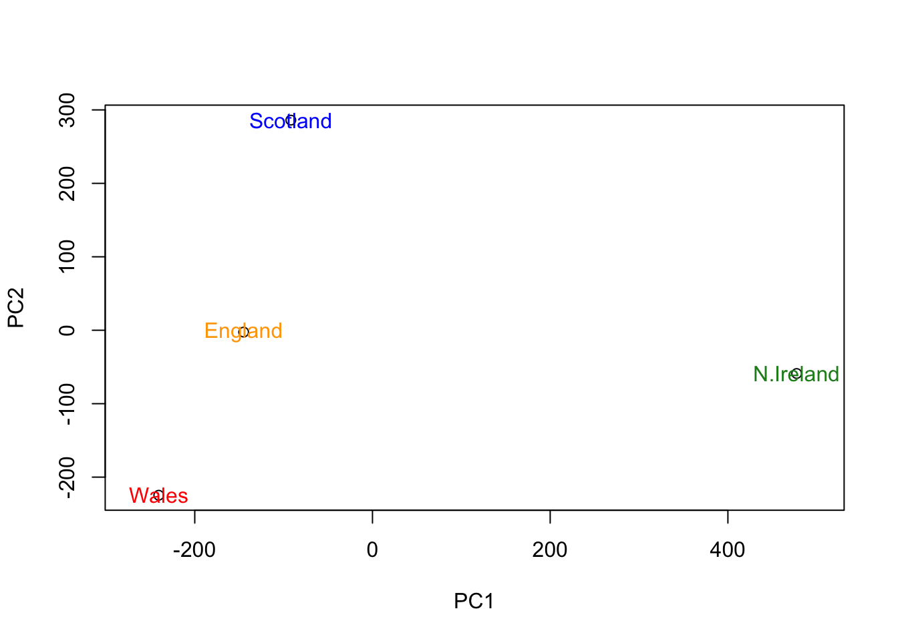

x <- rnorm(1000, mean=3)
hist(x)
We will start today’s lab with clustering methods, in particular so-called K-means. The main function for this in R is kmeans()
x <- rnorm(1000, mean=3)
hist(x)
60 points
tmp <- c(rnorm(30, 3), rnorm(30, -3))
x <- cbind(x=tmp, y=rev(tmp))
head(x) x y
[1,] 3.218389 -3.606851
[2,] 1.770844 -2.597512
[3,] 3.797706 -1.327558
[4,] 4.038960 -2.023532
[5,] 2.902757 -1.874717
[6,] 2.601201 -2.496804We can pass this to the base R plot() function for a quick graph.
plot(x)
With the kmeans() function you need to specify the data and how many centers you want. (nstart runs it multiple times and gives you the best answer)
k <- kmeans(x,2, nstart=20)
kK-means clustering with 2 clusters of sizes 30, 30
Cluster means:
x y
1 3.057343 -2.695951
2 -2.695951 3.057343
Clustering vector:
[1] 1 1 1 1 1 1 1 1 1 1 1 1 1 1 1 1 1 1 1 1 1 1 1 1 1 1 1 1 1 1 2 2 2 2 2 2 2 2
[39] 2 2 2 2 2 2 2 2 2 2 2 2 2 2 2 2 2 2 2 2 2 2
Within cluster sum of squares by cluster:
[1] 57.93886 57.93886
(between_SS / total_SS = 89.6 %)
Available components:
[1] "cluster" "centers" "totss" "withinss" "tot.withinss"
[6] "betweenss" "size" "iter" "ifault" Vectors (1 dimensional) Data Frames (collection of data) Lists (vectors + data frames)
Q1. How many points are in each cluster?
k$size[1] 30 30Q2. Cluster membership?
k$cluster [1] 1 1 1 1 1 1 1 1 1 1 1 1 1 1 1 1 1 1 1 1 1 1 1 1 1 1 1 1 1 1 2 2 2 2 2 2 2 2
[39] 2 2 2 2 2 2 2 2 2 2 2 2 2 2 2 2 2 2 2 2 2 2Q3. Cluster centers?
k$centers x y
1 3.057343 -2.695951
2 -2.695951 3.057343Q4. Plotting my results
plot(x, col=k$cluster, pch=16)
#pch makes points solidQ5. Cluster the data agin with kmeans() into 4 groups and plot the results
k4 <- kmeans(x, centers=4, nstart=20)
plot(x, col=k4$cluster, pch=16)
K-means is very popular mostly because it is fast and relatively straightforward to run and understand. It has a big limitiation in that you need to tell it how many groups (k, or centers) you want.
#Hierarchical Clustering
The main function in base R is called hclust(). You have to pass it in a “distance matrix” not just your input data.
You can generate a distance matri with the dist() function.
hc <- hclust ( dist(x) )
hc
Call:
hclust(d = dist(x))
Cluster method : complete
Distance : euclidean
Number of objects: 60 Let’s plot it
plot(hc)
To find the clusters (cluster membership vector)
plot(hc)
abline (h=8, col="red")
grps <- cutree(hc, h=8)table(grps)grps
1 2
30 30 Q6. Plot our hclust results
plot(x, col=grps, pch=16)
TEXT
url <- "https://tinyurl.com/UK-foods"
x <- read.csv(url, row.names = 1)
x England Wales Scotland N.Ireland
Cheese 105 103 103 66
Carcass_meat 245 227 242 267
Other_meat 685 803 750 586
Fish 147 160 122 93
Fats_and_oils 193 235 184 209
Sugars 156 175 147 139
Fresh_potatoes 720 874 566 1033
Fresh_Veg 253 265 171 143
Other_Veg 488 570 418 355
Processed_potatoes 198 203 220 187
Processed_Veg 360 365 337 334
Fresh_fruit 1102 1137 957 674
Cereals 1472 1582 1462 1494
Beverages 57 73 53 47
Soft_drinks 1374 1256 1572 1506
Alcoholic_drinks 375 475 458 135
Confectionery 54 64 62 41#View(x)Q1. How many rows and columns are in your new data frame named x? What R functions could you use to answer this questions?
dim(x)[1] 17 4ncol(x)[1] 4nrow(x)[1] 17Fixing the rows so they line up
# rownames(x) <- x[,1]
# x <- x[,-1]
# head(x)Q2. Which approach to solving the ‘row-names problem’ mentioned above do you prefer and why? Is one approach more robust than another under certain circumstances?
I prefer the second approach because there’s less room for error. If you run the code twice it won’t change anything, but for the first method running the code twice would mess up the whole data set.
barplot(as.matrix(x), beside=F, col=rainbow(nrow(x)))
Q3: Changing what optional argument in the above barplot() function results in the following plot?
Changing besides = F changes the plot completely.
Q5: Generating all pairwise plots may help somewhat. Can you make sense of the following code and resulting figure? What does it mean if a given point lies on the diagonal for a given plot?
pairs(x, col=rainbow(10), pch=16)
The previous code results in graphs comparing each country side by side. If a point lands on the diagonal that means the countries are very similar in their consumption of that category of food.
Q6. What is the main differences between N. Ireland and the other countries of the UK in terms of this data-set?
The main difference is the blue dot food category.
PCA can help us make sense of these types of datasets. Let’s see how it works.
The main function in “base” R is called prcomp(). In this case we want to first take the transpose t() of our input x so the columns are the food types and the countries are the rows.
head( t(x) ) Cheese Carcass_meat Other_meat Fish Fats_and_oils Sugars
England 105 245 685 147 193 156
Wales 103 227 803 160 235 175
Scotland 103 242 750 122 184 147
N.Ireland 66 267 586 93 209 139
Fresh_potatoes Fresh_Veg Other_Veg Processed_potatoes
England 720 253 488 198
Wales 874 265 570 203
Scotland 566 171 418 220
N.Ireland 1033 143 355 187
Processed_Veg Fresh_fruit Cereals Beverages Soft_drinks
England 360 1102 1472 57 1374
Wales 365 1137 1582 73 1256
Scotland 337 957 1462 53 1572
N.Ireland 334 674 1494 47 1506
Alcoholic_drinks Confectionery
England 375 54
Wales 475 64
Scotland 458 62
N.Ireland 135 41pca <- prcomp (t(x))
summary(pca)Importance of components:
PC1 PC2 PC3 PC4
Standard deviation 324.1502 212.7478 73.87622 3.176e-14
Proportion of Variance 0.6744 0.2905 0.03503 0.000e+00
Cumulative Proportion 0.6744 0.9650 1.00000 1.000e+00pca$x PC1 PC2 PC3 PC4
England -144.99315 -2.532999 105.768945 -4.894696e-14
Wales -240.52915 -224.646925 -56.475555 5.700024e-13
Scotland -91.86934 286.081786 -44.415495 -7.460785e-13
N.Ireland 477.39164 -58.901862 -4.877895 2.321303e-13Q7. Complete the code below to generate a plot of PC1 vs PC2. The second line adds text labels over the data points.
plot(pca$x[,1], pca$x[,2], xlab="PC1", ylab="PC2", xlim=c(-270,500))
text(pca$x[,1], pca$x[,2], colnames(x))
Q8. Customize your plot so that the colors of the country names match the colors in our UK and Ireland map and table at start of this document.
plot(pca$x[,1], pca$x[,2], xlab="PC1", ylab="PC2", xlim=c(-270,500))
text(pca$x[,1], pca$x[,2], colnames(x), col = c("orange", "red", "blue", "forestgreen"),
pch=16)
pca$rotation PC1 PC2 PC3 PC4
Cheese -0.056955380 0.016012850 0.02394295 -0.694538519
Carcass_meat 0.047927628 0.013915823 0.06367111 0.489884628
Other_meat -0.258916658 -0.015331138 -0.55384854 0.279023718
Fish -0.084414983 -0.050754947 0.03906481 -0.008483145
Fats_and_oils -0.005193623 -0.095388656 -0.12522257 0.076097502
Sugars -0.037620983 -0.043021699 -0.03605745 0.034101334
Fresh_potatoes 0.401402060 -0.715017078 -0.20668248 -0.090972715
Fresh_Veg -0.151849942 -0.144900268 0.21382237 -0.039901917
Other_Veg -0.243593729 -0.225450923 -0.05332841 0.016719075
Processed_potatoes -0.026886233 0.042850761 -0.07364902 0.030125166
Processed_Veg -0.036488269 -0.045451802 0.05289191 -0.013969507
Fresh_fruit -0.632640898 -0.177740743 0.40012865 0.184072217
Cereals -0.047702858 -0.212599678 -0.35884921 0.191926714
Beverages -0.026187756 -0.030560542 -0.04135860 0.004831876
Soft_drinks 0.232244140 0.555124311 -0.16942648 0.103508492
Alcoholic_drinks -0.463968168 0.113536523 -0.49858320 -0.316290619
Confectionery -0.029650201 0.005949921 -0.05232164 0.001847469v <- round( pca$sdev^2/sum(pca$sdev^2) * 100 )
barplot(v, xlab="Principal Component", ylab="Percent Variation")
par(mar=c(10, 3, 0.35, 0))
barplot( pca$rotation[,1], las=2 )
Stop at Q9.